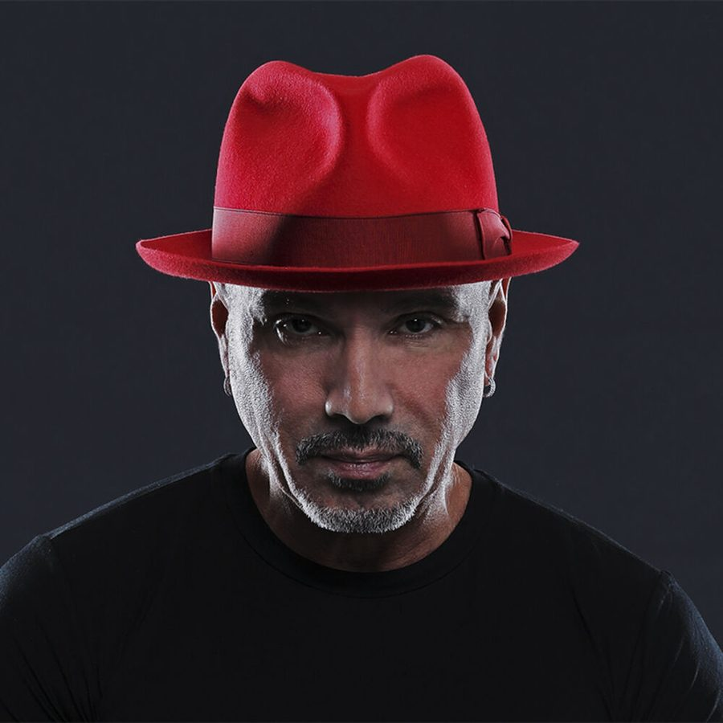

David Morales [Audio]: Not just a robot!


STREAMING AUDIO INTERVIEW
The word legend gets thrown around all too easily these days, but like him or not, it is difficult to deny the impact that David Morales has had on house music over the past two decades. From the early days at seminal NY house clubs The Loft and Paradise Garage, to his current residency at Stereo in Montreal, the Grammy Award winner has continued to develop his sound and live sets to stay ahead of the pack. Morales’ most famous joint Needin’ U celebrated it’s tenth birthday this year, the record that catapulted him in to the limelight and was responsible for the explosion of the remix and the mashup, dusting off and sprucing up old tracks for new generations of clubbers. Having worked with pop and RnB luminaries from Madonna and The Spice Girls to Michael Jackson and Mariah Carey, Morales has a musical ear to put many of his peers to shame.
Never one for jumping on the bandwagon, Morales rejects the rise of electro, telling ITM that it is just a trend and “won’t last forever.” Sticking to his roots in house music, Morales maintains his identity by holding on to a sense of fun, and if he’s not sure what the next record he’ll play is, how the hell are we supposed to know! Hold on tight, this is one dynamic mofo.
Swinging back into Australia to provide the soundtrack for this New Year’s celebrations, ITM’s Angus Paterson speaks to David Morales live from Manilla.
Catch David Morales at the following shows…
Wed 31st Dec – SHE NYE, Sydney
Thur 1st Jan – Summadayze, Melbourne
Sat 3rd Jan – Summafieldayze, Gold Coast
Sun 4th Jan – Summadayze, Perth
For more info on all the party action happening over summer, check out ITM’s Festival Pages for more news, features, clips and DJ mixes that you could possibly ever hope for!